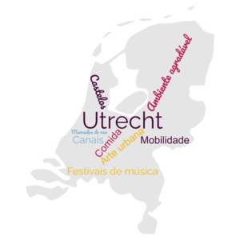

Utrecht

Introdução
Localização
Multimédia
Informação
Introdução
Cidade nos Países Baixos com paisagens agradáveis e magníficos canais
- Breve descrição da cidade
- Localização e pontos de interesse
- Vídeos e imagens na cidade
- Lista de informações e estatísticas da cidade
